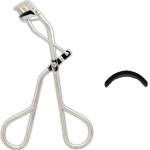

返回列表
产品名称：鉄舟コレクション アイラッシュカーラー

カネボウ化粧品 鉄舟コレクション アイラッシュカーラー －
メーカー カネボウ化粧品
JANコード 4973167897560
商品の特徴
日本人のまぶたにあわせたフレームと、特殊な弾力を持つシリコンゴムを使用した、使いやすく自然なカールができるアイラッシュカーラーです。
成分・分量
本体：鉄
ゴム：シリコン
用法及び用量
＜使用方法＞
※マスカラやつけまつ毛をつける前にご使用ください。
○アイラッシュカーラーのフレームをまぶたにあわせ、まつ毛の根元をはさみ軽く押さえます。
○根元からまつ毛の先に向かって2～3回にわけて徐々にカールをつけると自然に仕上がります。